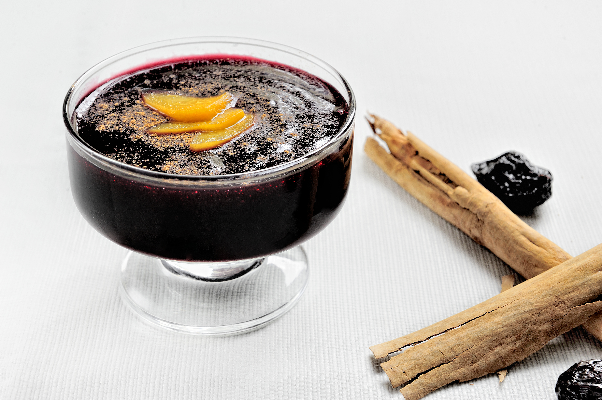

Purple Corn Pudding
Purple Corn Pudding," is one of Peru's most beloved and comforting desserts, traditionally enjoyed warm during the winter and the religious celebrations of October. It is a thick, jelly-like pudding made by boiling dried Peruvian purple corn with aromatic spices like cinnamon and cloves, alongside dynamic fruits like pineapple, quince, and dried prunes. Its unique deep-purple color, fruity aroma, and distinct sweet-and-tart flavor make it a quintessential staple of limeño street food, often served side-by-side in the same cup with rice pudding (arroz con leche) to create a famous combination known as a "combinado."
Ingredients
- 3 pounds ears purple corn
- 3 cloves
- 3 cinammon sticks
- 1 pineapple,peeled and chopped
- 1 granny Smiths apple, peeled and cored
- 1 quince, peeled, cored and chopped
- 9 cups water
- ½ cup prunes
- ½ cup dried apricots
- ½ cup sweet potato starch or potato starch
- 1½ cups sugar
- 1 limon
- Ground cinnamon
Instructions
- Break the dried corn in several pieces.
- Put in a heavy saucepan along with the cloves, cinnamon sticks, pineapple peels, apple and quince peels and cores, and water. Bring to a boil over high heat, and cook for 15 minutes. Turn the heat to medium and cook partially covered for 1 hour and 30 minutes, or until reduced to 6 cups.
- Strain, reserving the liquid. Discard the solids.
- In the same saucepan put the liquid, 2 cups chopped pineapple, chopped apple, prunes, apricots, and sugar. Bring to a boil, turn the heat to medium and cook for 20 minutes to soften the fruits.
- In a bowl, dissolve the potato starch in a little purple corn liquid or water, and add to the saucepan, stirring constantly. Cook for 5 more minutes.
- Turn off the heat, and add the lime juice.
- Serve in ramekins or glasses, sprinkled with ground cinnamon